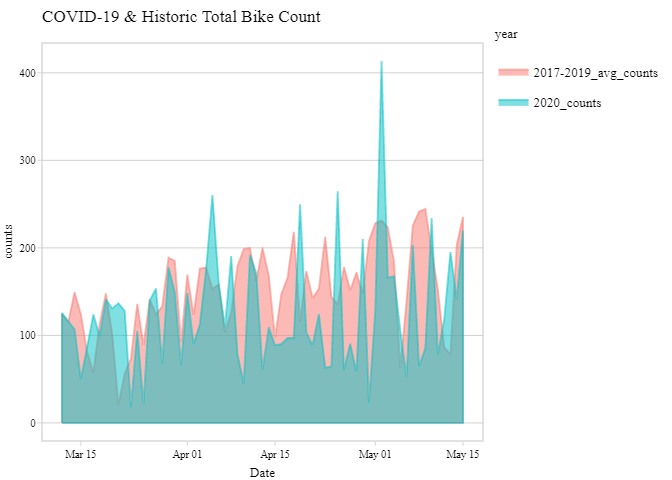
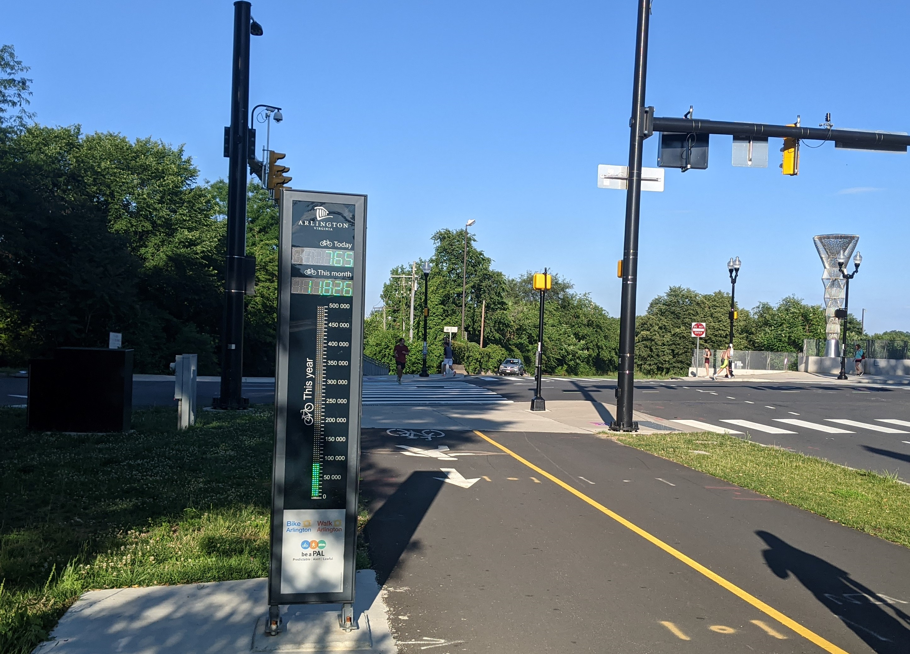

Background
In 2020, Minnesota’s Department of Transportaion put out a great visualization of Minneapolis’ surge in bicycle and pedestrian usage soon after Minneapolis governor Tim Walz declared a ‘Peacetime Emergency’ on March 13, 2020 and a ‘Stay at Home’ order twelve days later on March
Goal
We will similarly explore Arlington, Virginia’s bicycle ridership numbers around Virginia Governor Northram’s State of Emergency Declaration on March 12, 2020 and Stay at Home order on March 30, 2020.
Below is the plot you will create using Arlington’s bike data.

Follow along or explore on your own
Subsequent posts for this project will outline step by step how I went about creating similar visualizations to the Minnesota DOT. I believe this is a great project for those new to Python, R, or databases. Each Part of this project will have a Goal section. You have the option to give the goals a shot on your own before looking at how I accomplished them. If you have any questions, comments, or are working on your own analysis, send me an email!
Requirements
Before you start the project, the requirements are listed below. I’ll document as best I can how to set up the MySQL database and connect everything together in part 3.
- Python 3.6 or later
- R/R Studio
- Very basic Python and R knowledge
Note: To make my life easier, I installed the full Anaconda suite and use the Spyder IDE when working in Python. I played around with installing Miniconda but when it comes to managing the conda environments in R using the Reticulate library, it gave me a headache.
The Datasets
One of the best parts of living in Arlington, Virginia is its beautiful paved bike paths, particularly the Arlington Loop. Riders of the loop probably have noticed the Bikeometer near the Francis Scott Key Memorial Bridge displaying the daily, monthly, and yearly bicycle counts.

To my delight, these numbers are not only publicly available, but also easily requested using an API and detailed documentation. Additionally, Covid-19 case/vaccine data from the Virginia Health Department will be used to visualize how trail usage is affected by major events like a global pandemic.
MySQL
One of my aims for this project was to create a pipeline that foregoes saving individual ‘data’ files (e.g. csv, xml, json, txt) to the computer and instead used a database to store the data. After reading over this great article that gives a good overview of SQLite, PostgreSQL, and MySQL, I decided on MySQL to handle my database. A second factor in my decision was because my favorite Udemy instructor Colt Steele had a MySQL course on sale The Ultimate MySQL Bootcamp: Go from SQL Beginner to Expert. I highly recommend it to learn MySQL.
Short Bike Story
Recently, after helping teach my friend how to ride a bike, we excitedly visited the local bike shop to hopefully make a purchase. Unfortunately, over a year into the pandemic, we were told if we ordered today, the bike would be delivered in 6 months.
Later that day, I visited the local used bike shop and was excitedly told that for $400, I could have a refurbished 1997 Bianchi Timber Wolf, a bike which according to BikePedia.com, originally sold for $300. Either this bike had holographic Charizards in its spokes, or demand for bikes is still very high.
Check out Part 2, Query the Bike Arlington API
LS0tDQp0aXRsZTogIlZpc3VhbGl6aW5nIEFybGluZ3RvbiBCaWtvbWV0ZXJzIg0Kc3VidGl0bGU6ICJQYXJ0IDE6IFRoZSBQbGFuIg0Kb3V0cHV0Og0KICBodG1sX2RvY3VtZW50Og0KICAgIHRvYzogdHJ1ZQ0KICAgIHRvY19kZXB0aDogMg0KICAgIHRvY19mbG9hdDogdHJ1ZQ0KICAgIGhpZ2hsaWdodDogemVuYnVybg0KICAgIGNvZGVfZG93bmxvYWQ6IHRydWUNCi0tLQ0KXCANClwgDQoNCiMgQmFja2dyb3VuZA0KSW4gMjAyMCwgTWlubmVzb3RhJ3MgRGVwYXJ0bWVudCBvZiBUcmFuc3BvcnRhaW9uIHB1dCBvdXQgYSBbZ3JlYXQgdmlzdWFsaXphdGlvbl0oaHR0cHM6Ly9zdG9yeW1hcHMuYXJjZ2lzLmNvbS9zdG9yaWVzLzcwYTNhNTcwMDNiNTQxZWQ4ZTkxMWNkMTExMDNkYzZhKSBvZiBNaW5uZWFwb2xpcycgc3VyZ2UgaW4gYmljeWNsZSBhbmQgcGVkZXN0cmlhbiB1c2FnZSBzb29uIGFmdGVyIE1pbm5lYXBvbGlzIGdvdmVybm9yIFRpbSBXYWx6IGRlY2xhcmVkIGEgJ1BlYWNldGltZSBFbWVyZ2VuY3knIG9uIE1hcmNoIDEzLCAyMDIwIGFuZCBhICdTdGF5IGF0IEhvbWUnIG9yZGVyIHR3ZWx2ZSBkYXlzIGxhdGVyIG9uIE1hcmNoIA0KDQojIEdvYWwNCg0KV2Ugd2lsbCBzaW1pbGFybHkgZXhwbG9yZSBBcmxpbmd0b24sIFZpcmdpbmlhJ3MgYmljeWNsZSByaWRlcnNoaXAgbnVtYmVycyBhcm91bmQgVmlyZ2luaWEgR292ZXJub3IgTm9ydGhyYW0ncyBbU3RhdGUgb2YgRW1lcmdlbmN5XShodHRwczovL3d3dy5nb3Zlcm5vci52aXJnaW5pYS5nb3YvbmV3c3Jvb20vYWxsLXJlbGVhc2VzLzIwMjAvbWFyY2gvaGVhZGxpbmUtODUzNTM3LWVuLmh0bWwpIERlY2xhcmF0aW9uIG9uIE1hcmNoIDEyLCAyMDIwIGFuZCBbU3RheSBhdCBIb21lIG9yZGVyXShodHRwczovL3d3dy5nb3Zlcm5vci52aXJnaW5pYS5nb3YvbmV3c3Jvb20vYWxsLXJlbGVhc2VzLzIwMjAvbWFyY2gvaGVhZGxpbmUtODU1NzAyLWVuLmh0bWwpIG9uIE1hcmNoIDMwLCAyMDIwLg0KDQpCZWxvdyBpcyB0aGUgcGxvdCB5b3Ugd2lsbCBjcmVhdGUgdXNpbmcgQXJsaW5ndG9uJ3MgYmlrZSBkYXRhLg0KDQohW10oaW1hZ2VzL25ld3Bsb3QucG5nKQ0KDQojIyBGb2xsb3cgYWxvbmcgb3IgZXhwbG9yZSBvbiB5b3VyIG93bg0KU3Vic2VxdWVudCBwb3N0cyBmb3IgdGhpcyBwcm9qZWN0IHdpbGwgb3V0bGluZSBzdGVwIGJ5IHN0ZXAgaG93IEkgd2VudCBhYm91dCBjcmVhdGluZyBzaW1pbGFyIHZpc3VhbGl6YXRpb25zIHRvIHRoZSBNaW5uZXNvdGEgRE9ULiBJIGJlbGlldmUgdGhpcyBpcyBhIGdyZWF0IHByb2plY3QgZm9yIHRob3NlIG5ldyB0byBQeXRob24sIFIsIG9yIGRhdGFiYXNlcy4gRWFjaCAqUGFydCogb2YgdGhpcyBwcm9qZWN0IHdpbGwgaGF2ZSBhICoqR29hbCoqIHNlY3Rpb24uIFlvdSBoYXZlIHRoZSBvcHRpb24gdG8gZ2l2ZSB0aGUgZ29hbHMgYSBzaG90IG9uIHlvdXIgb3duIGJlZm9yZSBsb29raW5nIGF0IGhvdyBJIGFjY29tcGxpc2hlZCB0aGVtLiBJZiB5b3UgaGF2ZSBhbnkgcXVlc3Rpb25zLCBjb21tZW50cywgb3IgYXJlIHdvcmtpbmcgb24geW91ciBvd24gYW5hbHlzaXMsIFtzZW5kIG1lIGFuIGVtYWlsXShtYWlsdG86bWFpbC5uYXRoYW5zcHJvamVjdHNAZ21haWwuY29tKSENCg0KIyMgUmVxdWlyZW1lbnRzDQpCZWZvcmUgeW91IHN0YXJ0IHRoZSBwcm9qZWN0LCB0aGUgcmVxdWlyZW1lbnRzIGFyZSBsaXN0ZWQgYmVsb3cuIEknbGwgZG9jdW1lbnQgYXMgYmVzdCBJIGNhbiBob3cgdG8gc2V0IHVwIHRoZSBNeVNRTCBkYXRhYmFzZSBhbmQgY29ubmVjdCBldmVyeXRoaW5nIHRvZ2V0aGVyIGluIFtwYXJ0IDNdKGh0dHBzOi8vbmF0aGFuc3Byb2plY3RzLmNvbS9wYXJ0XzNfc2V0dXBfeW91cl9kYXRhYmFzZS5odG1sKS4NCg0KMS4gUHl0aG9uIDMuNiBvciBsYXRlcg0KMi4gUi9SIFN0dWRpbw0KMy4gVmVyeSBiYXNpYyBbUHl0aG9uXShodHRwczovL29jdy5taXQuZWR1L2NvdXJzZXMvZWxlY3RyaWNhbC1lbmdpbmVlcmluZy1hbmQtY29tcHV0ZXItc2NpZW5jZS82LTAwMDEtaW50cm9kdWN0aW9uLXRvLWNvbXB1dGVyLXNjaWVuY2UtYW5kLXByb2dyYW1taW5nLWluLXB5dGhvbi1mYWxsLTIwMTYvKSBhbmQgW1JdKGh0dHBzOi8vd3d3LmVkeC5vcmcvY291cnNlL2RhdGEtc2NpZW5jZS1yLWJhc2ljcykga25vd2xlZGdlDQoNCk5vdGU6IFRvIG1ha2UgbXkgbGlmZSBlYXNpZXIsIEkgaW5zdGFsbGVkIHRoZSBbZnVsbCBBbmFjb25kYSBzdWl0ZV0oaHR0cHM6Ly93d3cuYW5hY29uZGEuY29tL3Byb2R1Y3RzL2luZGl2aWR1YWwpIGFuZCB1c2UgdGhlIFNweWRlciBJREUgd2hlbiB3b3JraW5nIGluIFB5dGhvbi4gSSBwbGF5ZWQgYXJvdW5kIHdpdGggaW5zdGFsbGluZyBbTWluaWNvbmRhXShodHRwczovL2RvY3MuY29uZGEuaW8vZW4vbGF0ZXN0L21pbmljb25kYS5odG1sKSBidXQgd2hlbiBpdCBjb21lcyB0byBtYW5hZ2luZyB0aGUgY29uZGEgZW52aXJvbm1lbnRzIGluIFIgdXNpbmcgdGhlIFtSZXRpY3VsYXRlIGxpYnJhcnldKGh0dHBzOi8vcnN0dWRpby5naXRodWIuaW8vcmV0aWN1bGF0ZS8pLCBpdCBnYXZlIG1lIGEgaGVhZGFjaGUuIA0KDQojIFRoZSBEYXRhc2V0cw0KDQpPbmUgb2YgdGhlIGJlc3QgcGFydHMgb2YgbGl2aW5nIGluIEFybGluZ3RvbiwgVmlyZ2luaWEgaXMgaXRzIGJlYXV0aWZ1bCBwYXZlZCBiaWtlIHBhdGhzLCBwYXJ0aWN1bGFybHkgdGhlIFtBcmxpbmd0b24gTG9vcF0oaHR0cHM6Ly93d3cuYmlrZWFybGluZ3Rvbi5jb20vd3AtY29udGVudC91cGxvYWRzLzIwMTcvMDQvU2VsZi1HdWlkZWQtUm91dGUtTWFwX0FybGluZ3Rvbi1Mb29wLW1pbi5wZGYpLiBSaWRlcnMgb2YgdGhlIGxvb3AgcHJvYmFibHkgaGF2ZSBub3RpY2VkIHRoZSBbQmlrZW9tZXRlcl0oaHR0cHM6Ly93d3cuYmlrZWFybGluZ3Rvbi5jb20vd3AtY29udGVudC91cGxvYWRzLzIwMTcvMDMvYmlrZW9tZXRlci1taW4uanBnKSBuZWFyIHRoZSBGcmFuY2lzIFNjb3R0IEtleSBNZW1vcmlhbCBCcmlkZ2UgZGlzcGxheWluZyB0aGUgZGFpbHksIG1vbnRobHksIGFuZCB5ZWFybHkgYmljeWNsZSBjb3VudHMuIA0KDQohW10oaW1hZ2VzL2Jpa2VvbWV0ZXIuanBnKQ0KDQpUbyBteSBkZWxpZ2h0LCB0aGVzZSBudW1iZXJzIGFyZSBub3Qgb25seSBbcHVibGljbHkgYXZhaWxhYmxlXShodHRwOi8vY291bnRlcnMuYmlrZWFybGluZ3Rvbi5jb20vKSwgYnV0IGFsc28gZWFzaWx5IHJlcXVlc3RlZCB1c2luZyBhbiBBUEkgYW5kIFtkZXRhaWxlZCBkb2N1bWVudGF0aW9uXShodHRwOi8vY291bnRlcnMuYmlrZWFybGluZ3Rvbi5jb20vYmlrZS9hc3NldHMvRmlsZS9SZWdpb25hbF9iaWtlYXJsaW5ndG9uX3dlYnNlcnZpY2VzLnBkZikuIEFkZGl0aW9uYWxseSwgQ292aWQtMTkgY2FzZS92YWNjaW5lIGRhdGEgZnJvbSB0aGUgW1ZpcmdpbmlhIEhlYWx0aCBEZXBhcnRtZW50XShodHRwczovL3d3dy52ZGgudmlyZ2luaWEuZ292L2Nvcm9uYXZpcnVzLykgd2lsbCBiZSB1c2VkIHRvIHZpc3VhbGl6ZSBob3cgdHJhaWwgdXNhZ2UgaXMgYWZmZWN0ZWQgYnkgbWFqb3IgZXZlbnRzIGxpa2UgYSBnbG9iYWwgcGFuZGVtaWMuDQoNCg0KDQojIFB5dGhvbg0KUHl0aG9uIHdpbGwgYmUgdXNlZCB0byBhdXRvbWF0ZSBhIG51bWJlciBvZiBhY3Rpb25zOg0KMS4gIFJlcXVlc3QgcmlkZXJzaGlwIGNvdW50cyBmcm9tIHRoZSBbQmlrZUFybGluZ3RvbiBBUEldKGh0dHA6Ly9jb3VudGVycy5iaWtlYXJsaW5ndG9uLmNvbS9jb3VudGVyLWRhc2hib2FyZC8pDQoyLiAgUmVxdWVzdCBDb3ZpZC0xOSBkYXRhIGZyb20gdGhlIFZpcmdpbmlhIEhlYWx0aCBEZXBhcnRtZW50IG9uIFtUb3RhbCBOdW1iZXIgb2YgQ2FzZXMgcGVyIExvY2FsaXR5XShodHRwczovL2RhdGEudmlyZ2luaWEuZ292L0dvdmVybm1lbnQvVkRILUNPVklELTE5LVB1YmxpY1VzZURhdGFzZXQtQ2FzZXMvYnJlOS1hcXFyKSBhbmQgW1RvdGFsIFZhY2NpbmVzIEFkbWluaXN0ZXJlZF0oaHR0cHM6Ly9kYXRhLnZpcmdpbmlhLmdvdi9kYXRhc2V0L1ZESC1DT1ZJRC0xOS1QdWJsaWNVc2VEYXRhc2V0LVZhY2NpbmVzLURvc2VzQWRtaW5pLzI4azIteDJyaikNCjMuICBDbGVhbiBhbmQgZm9ybWF0IHRoZSBkYXRhDQo0LiAgU3RvcmUgdGhlIGRhdGEgaW4gYSBkYXRhYmFzZQ0KNS4gIEF1dG9tYXRlIHN0ZXBzIDEtMyBmb3IgbmV3IGRhdGENCg0KIyBNeVNRTA0KT25lIG9mIG15IGFpbXMgZm9yIHRoaXMgcHJvamVjdCB3YXMgdG8gY3JlYXRlIGEgcGlwZWxpbmUgdGhhdCBmb3JlZ29lcyBzYXZpbmcgaW5kaXZpZHVhbCAnZGF0YScgZmlsZXMgKGUuZy4gY3N2LCB4bWwsIGpzb24sIHR4dCkgdG8gdGhlIGNvbXB1dGVyIGFuZCBpbnN0ZWFkIHVzZWQgYSBkYXRhYmFzZSB0byBzdG9yZSB0aGUgZGF0YS4gQWZ0ZXIgcmVhZGluZyBvdmVyIFt0aGlzIGdyZWF0IGFydGljbGVdKGh0dHBzOi8vcmVhbHB5dGhvbi5jb20vcHl0aG9uLW15c3FsLykgdGhhdCBnaXZlcyBhIGdvb2Qgb3ZlcnZpZXcgb2YgU1FMaXRlLCBQb3N0Z3JlU1FMLCBhbmQgTXlTUUwsIEkgZGVjaWRlZCBvbiBNeVNRTCB0byBoYW5kbGUgbXkgZGF0YWJhc2UuIEEgc2Vjb25kIGZhY3RvciBpbiBteSBkZWNpc2lvbiB3YXMgYmVjYXVzZSBteSBmYXZvcml0ZSBVZGVteSBpbnN0cnVjdG9yIENvbHQgU3RlZWxlIGhhZCBhIE15U1FMIGNvdXJzZSBvbiBzYWxlIFtUaGUgVWx0aW1hdGUgTXlTUUwgQm9vdGNhbXA6IEdvIGZyb20gU1FMIEJlZ2lubmVyIHRvIEV4cGVydF0oaHR0cHM6Ly93d3cudWRlbXkuY29tL2NvdXJzZS90aGUtdWx0aW1hdGUtbXlzcWwtYm9vdGNhbXAtZ28tZnJvbS1zcWwtYmVnaW5uZXItdG8tZXhwZXJ0LykuIEkgaGlnaGx5IHJlY29tbWVuZCBpdCB0byBsZWFybiBNeVNRTC4NCg0KIyBSDQpSIHdpbGwgYmUgdXNlZCB0byBwdWxsIGRhdGEgb3V0IG9mIHRoZSBNeVNRTCBkYXRhYmFzZSBhbmQgY3JlYXRlIHZpc3VhbGl6YXRpb25zLiBBY2NvcmRpbmcgdG8gdGhlIE1pbm5lc290YSBEZXBhcnRtZW50IG9mIFRyYW5zcG9ydGF0aW9uJ3MgcmVwb3J0OiBbKk1pbm5lc290YSdzIFdhbGtpbmcgYW5kIEJpY3ljbGluZyBEYXRhIENvbGxlY3Rpb24gUmVwb3J0IFVwZGF0ZSBBbm51YWwgRGF0YSBmcm9tIDIwMTQgdG8gMjAxOSpdKGh0dHBzOi8vd3d3LmRvdC5zdGF0ZS5tbi51cy9iaWtlLXBlZC1jb3VudGluZy9yZXBvcnRzLzIwMTgtMjAxOSUyME1pbm5lc290YVBlZEJpa2VDb3VudFJlcG9ydC5wZGYpLCAiV2hlbiBpcnJlZ3VsYXJpdGllcyBhcmUgZm91bmQsIHRoZSBkYXRhIGFyZSBydW4gdGhyb3VnaCBhIHN0YXRpc3RpY2FsIG1vZGVsIGluICdSIFN0dWRpbycgYW5kIGNsZWFuZWQgdXAuIiBJIGhvcGUgdG8gZW1wbG95IHNpbWlsYXIgbWV0aG9kcyB0byBhbmFseXplIGFuZCBjbGVhbiB0aGUgZGF0YSBpbiBSLiANCg0KIyBTaG9ydCBCaWtlIFN0b3J5DQpSZWNlbnRseSwgYWZ0ZXIgaGVscGluZyB0ZWFjaCBteSBmcmllbmQgaG93IHRvIHJpZGUgYSBiaWtlLCB3ZSBleGNpdGVkbHkgdmlzaXRlZCB0aGUgbG9jYWwgYmlrZSBzaG9wIHRvIGhvcGVmdWxseSBtYWtlIGEgcHVyY2hhc2UuIFVuZm9ydHVuYXRlbHksIG92ZXIgYSB5ZWFyIGludG8gdGhlIHBhbmRlbWljLCB3ZSB3ZXJlIHRvbGQgaWYgd2Ugb3JkZXJlZCB0b2RheSwgdGhlIGJpa2Ugd291bGQgYmUgZGVsaXZlcmVkIGluICoqNiBtb250aHMqKi4NCg0KTGF0ZXIgdGhhdCBkYXksIEkgdmlzaXRlZCB0aGUgbG9jYWwgKnVzZWQqIGJpa2Ugc2hvcCBhbmQgd2FzIGV4Y2l0ZWRseSB0b2xkIHRoYXQgZm9yIFwkNDAwLCBJIGNvdWxkIGhhdmUgYSByZWZ1cmJpc2hlZCAxOTk3IEJpYW5jaGkgVGltYmVyIFdvbGYsIGEgYmlrZSB3aGljaCBhY2NvcmRpbmcgdG8gQmlrZVBlZGlhLmNvbSwgb3JpZ2luYWxseSBzb2xkIGZvciBcJDMwMC4gRWl0aGVyIHRoaXMgYmlrZSBoYWQgW2hvbG9ncmFwaGljIENoYXJpemFyZHNdKGh0dHBzOi8vd3d3LnBvbHlnb24uY29tLzIyMzU2NDAxL2hvbG9ncmFwaGljLWNoYXJpemFyZC1lYmF5LTMwMGstc29sZC1wb2tlbW9uLWNhcmRzKSBpbiBpdHMgc3Bva2VzLCBvciBkZW1hbmQgZm9yIGJpa2VzIGlzIHN0aWxsIHZlcnkgaGlnaC4NCg0KW0NoZWNrIG91dCBQYXJ0IDIsIFF1ZXJ5IHRoZSBCaWtlIEFybGluZ3RvbiBBUEldKGh0dHBzOi8vbmF0aGFuc3Byb2plY3RzLmNvbS9wYXJ0XzJfcXVlcnlfdGhlX2FwaS5odG1sKQ0KDQo=
{kind=link}